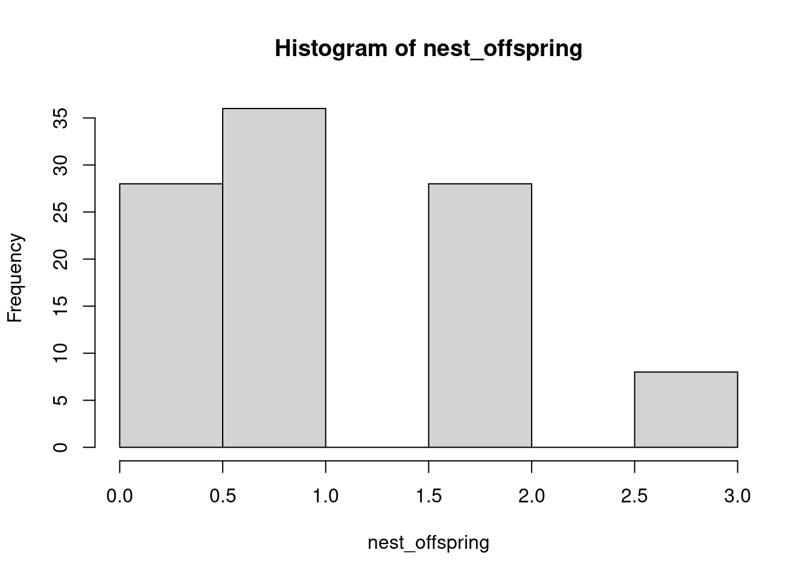
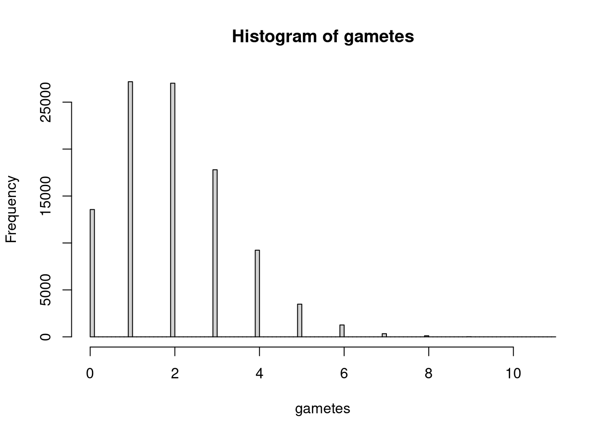
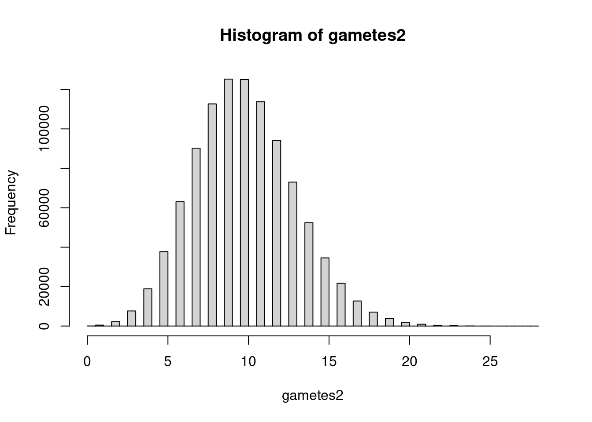
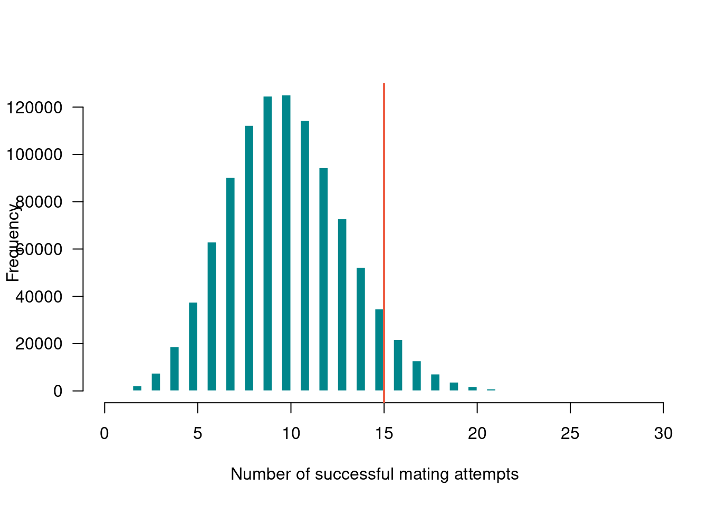

Guillemots typically only lay 1-2 eggs, but for the sake of our example code, let’s pretend that each pair has 3 chicks that are attempting to make it to the ocean. Each individual chick’s attempt could be modeled with a Bernoulli distribution, but if we consider it from the perspective of the breeding pair, the total number of surviving offspring is what matters. We can think of the number of chicks from each nest that make it to the ocean as the sum of their individual attempts for a single nest. This is the Binomial distribution, which is a more generalized version of the Bernoulli distribution (more accurately, the Bernoulli distribution is a special case of the Binomial distribution with one draw) in which each observation has multiple draws.
## [1] 2# we could also think about a colony with let's say 100 nests
# how many chicks from each nest will make it?
nest_offspring <- rbinom(n=100, size=3, p=0.4)
hist(nest_offspring)
## [1] 1 1 1 0 2 2 1 1 1 0 1 1 0 0 2 2 0 1 2 1 0 1 3 1 2 0 1 2 0 1 3 3 0 1 0 1 1
## [38] 2 2 0 1 1 0 0 0 2 0 1 1 0 1 0 1 1 0 1 2 0 0 0 2 0 0 1 2 3 1 1 2 1 1 1 1 1
## [75] 1 1 0 1 1 0 0 1 2 2 1 3 0 1 0 1 2 0 1 1 1 0 1 2 2 0# what is the probability that all three chicks from a nest make it?
# because we know what we fixed p to, we could multiply the probabilities
0.4^3## [1] 0.064## [1] 0.216We are able to calculate what the probability of these outcomes are because we fixed the probability of success at 0.4 and then simulated outcomes. In the real world, we rarely know what the probability of success truly is, and instead we are working backwards from our observed outcomes (i.e. our data) to estimate the probability of survival. One of the beautiful things about working with simulated data is that we know the input value, so we can test assumptions, see if we recapture our input, and play around with different model structures and know that anything that is unexpected is most likely a problem with our code or model, not the data.
With discrete distributions like the Binomial, we can convert the frequency of outcomes to a proportion of the total as an estimate of probability. Dividing the frequencies by the total sample size makes it so that the total probability sums to 1.
# table is a function that tallies up all the items in a vector
# a vector is a type of object that is one dimension, i.e. nest_offspring is a
# vector with length = 100
table(nest_offspring)## nest_offspring
## 0 1 2 3
## 31 45 19 5# proportions will convert the table into proportions instead of counts
# so will prop.table and I often use that function because I learned it first
# there are many different ways to accomplish the same goal in R
survival_prob <- proportions(table(nest_offspring))
# How do these values compare to the calculated probability of all three chicks
# surviving? What about of none surviving?
# With the values calculated from the simulated data (i.e. not the parameter
# value that we fixed), what is the probability that *at least* one chick
# from a nest survives?
0.47 + 0.27 + 0.06 # note: numbers might be different because we didn't set.seed()## [1] 0.8In general with coding, you want to avoid hard coding like this where you put in fixed values. It is much better to use code that is flexible if the input data changes (e.g. we are using a randomly generated dataset, so it will change every time), or if you want to change some parameter across a lot of different parts of the code. For example, instead of repeatedly typing p=0.4, we could have created an object in our environment with the probability of success such as p.surv <- 0.4 and then specifying p=p.surv throughout the script, which would make it really easy to change the simulations for a new scenario (e.g. if the guillemot chicks were given little hang-gliders, we might increase p.surv and would only have to type it out once as p.surv <- 0.8.
Subsetting vectors in R is a really useful tool when you want to apply a function to only part of a vector, inspect part of an object, etc. We use the square brackets [] for subsetting, and within them specify which elements to return. The elements to return can be a numeric vector (e.g. c(1,2,4)) to return the first, second, and fourth elements, or a logical vector indicating if an element should or should not be returned (e.g. c(TRUE TRUE FALSE TRUE)). If subsetting a range of consecutive elements, the : operator can also be used (e.g. 1:4 is the same as c(1,2,3,4)).
# To avoid hard coding our estimated percent, we can use sum() on a subset of
# the table of proportions to estimate the probability at least one survives?
sum(survival_prob[2:4])## [1] 0.69## [1] 0.24# side note: if you're not sure which indices to subset, it can help to look at
# your object; you can easily do this in RStudio by highlighting just the bit of
# code with your object name and using Ctrl + Enter (or Cmd + Enter) to print
# just that object to the console, i.e. if you highlight part of a line, you will
# only run the highlighted bit, not the entire lineWith the guillemots, we were assuming that each pair had three potential offspring surviving. What happens if we vastly increase the number of draws from the binomial distribution? Take corals as an example. Some broadcast spawning corals have mass synchronized spawning events where individual corals on a reef all release bundles of sperm and eggs at the same time. The reproductive success of each individual coral can still be modeled as a binomial distribution, i.e. how many of those released sperm and eggs will actually encounter a bundle of the same species and be a successful mating attempt is a random variable drawn from a Binomial distribution with a number of draws \(N\) equal to the number of released sperm and eggs and a probability of success \(p\) for each of those. \[ offspring \sim Binomial(N, p)\].
Note: the \(N\) for denoting the number of draws from the Binomial is distinct from the n = argument in the rbinom() function. Don’t let this confuse you! \(N\) equates to the size = argument, while n = is the number of observations of the random variable, i.e. the total number of individual corals on the reef.
# let's assume now the coral reef has 100,00 individual corals (I have no
# clue if this is an accurate number, but let's roll with it)
# let's also assume each individual coral releases 10,000 sperm and eggs
# and the probability for each of those resulting in a successful mating event
# 0.0002 (i.e. 0.002%)
gametes <- rbinom(n=100000, size=10000, p=0.0002)
hist(gametes, breaks = 100)
## gametes
## 0 1 2 3 4 5 6 7 8 9
## 0.13312 0.27083 0.27112 0.18054 0.09084 0.03664 0.01231 0.00347 0.00089 0.00019
## 10
## 0.00005##
## FALSE TRUE
## 0.98309 0.01691# now let's increase the number of individual corals to 1 million, and also increase
# the probability of success to 0.001
gametes2 <- rbinom(n=1000000, size=10000, p=0.001)
hist(gametes2, breaks=100)
##
## FALSE TRUE
## 0.999965 0.000035##
## FALSE TRUE
## 0.951292 0.048708# let's visualize the data as a histogram again, but add a vertical bar using
# the abline() function at 15; note there are other plotting options to make
# your plots slightly more aesthetic
hist(gametes2,
breaks=100,
border=F, # i just don't like borders on bars
col="turquoise4",
main="", # removes the 'title'
xlab="Number of successful mating attempts", # changes x axis label
las=1 # rotates the axis labels the right way
)
abline(v=15,
lwd=2, # width of line
col="tomato2")